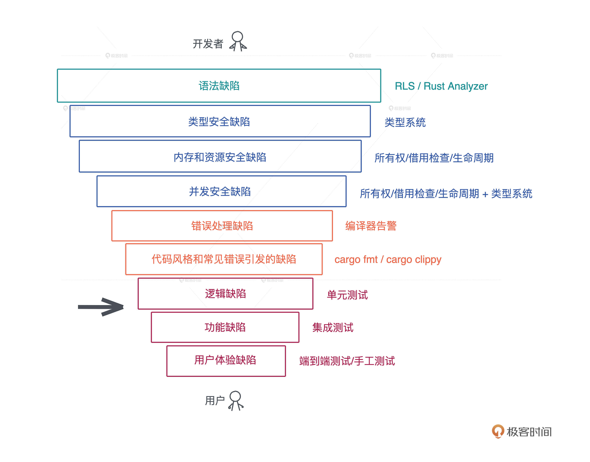
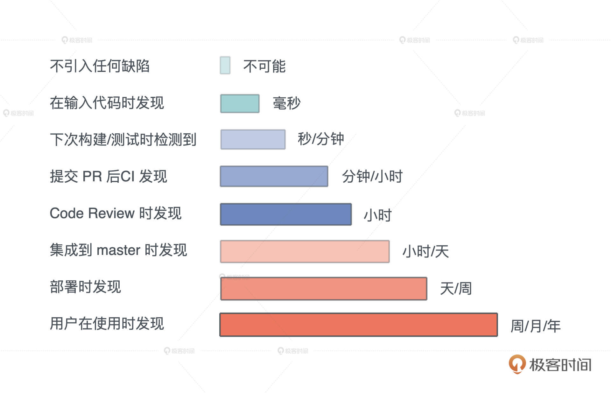
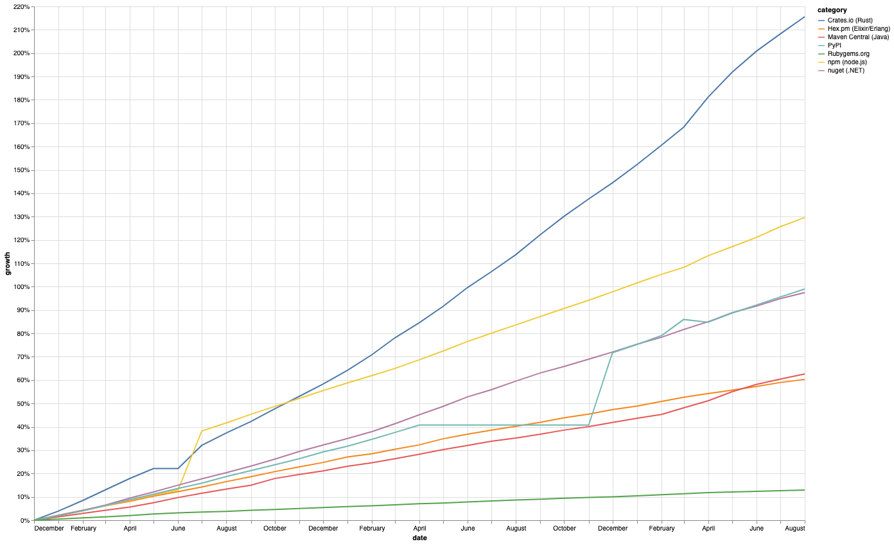

- 00 开篇词 让Rust成为你的下一门主力语言.md
- 01 内存：值放堆上还是放栈上，这是一个问题.md
- 02 串讲：编程开发中，那些你需要掌握的基本概念.md
- 03 初窥门径：从你的第一个Rust程序开始！.md
- 04 get hands dirty：来写个实用的CLI小工具.md
- 05 get hands dirty：做一个图片服务器有多难？.md
- 06 get hands dirty：SQL查询工具怎么一鱼多吃？.md
- 07 所有权：值的生杀大权到底在谁手上？.md
- 08 所有权：值的借用是如何工作的？.md
- 09 所有权：一个值可以有多个所有者么？.md
- 10 生命周期：你创建的值究竟能活多久？.md
- 11 内存管理：从创建到消亡，值都经历了什么？.md
- 12 类型系统：Rust的类型系统有什么特点？.md
- 13 类型系统：如何使用trait来定义接口？.md
- 14 类型系统：有哪些必须掌握的trait？.md
- 15 数据结构：这些浓眉大眼的结构竟然都是智能指针？.md
- 16 数据结构：Vec_T_、&[T]、Box_[T]_ ，你真的了解集合容器么？.md
- 17 数据结构：软件系统核心部件哈希表，内存如何布局？.md
- 18 错误处理：为什么Rust的错误处理与众不同？.md
- 19 闭包：FnOnce、FnMut和Fn，为什么有这么多类型？.md
- 20 4 Steps ：如何更好地阅读Rust源码？.md
- 21 阶段实操（1）：构建一个简单的KV server-基本流程.md
- 22 阶段实操（2）：构建一个简单的KV server-基本流程.md
- 23 类型系统：如何在实战中使用泛型编程？.md
- 24 类型系统：如何在实战中使用trait object？.md
- 25 类型系统：如何围绕trait来设计和架构系统？.md
- 26 阶段实操（3）：构建一个简单的KV server-高级trait技巧.md
- 27 生态系统：有哪些常有的Rust库可以为我所用？.md
- 28 网络开发（上）：如何使用Rust处理网络请求？.md
- 29 网络开发（下）：如何使用Rust处理网络请求？.md
- 30 Unsafe Rust：如何用C++的方式打开Rust？.md
- 31 FFI：Rust如何和你的语言架起沟通桥梁？.md
- 32 实操项目：使用PyO3开发Python3模块.md
- 33 并发处理（上）：从atomics到Channel，Rust都提供了什么工具？.md
- 34 并发处理（下）：从atomics到Channel，Rust都提供了什么工具？.md
- 35 实操项目：如何实现一个基本的MPSC channel？.md
- 36 阶段实操（4）：构建一个简单的KV server-网络处理.md
- 37 阶段实操（5）：构建一个简单的KV server-网络安全.md
- 38 异步处理：Future是什么？它和async_await是什么关系？.md
- 39 异步处理：async_await内部是怎么实现的？.md
- 40 异步处理：如何处理异步IO？.md
- 41 阶段实操（6）：构建一个简单的KV server-异步处理.md
- 42 阶段实操（7）：构建一个简单的KV server-如何做大的重构？.md
- 43 生产环境：真实世界下的一个Rust项目包含哪些要素？.md
- 44 数据处理：应用程序和数据如何打交道？.md
- 45 阶段实操（8）：构建一个简单的KV server-配置_测试_监控_CI_CD.md
- 46 软件架构：如何用Rust架构复杂系统？.md
- 加餐 Rust2021版次问世了！.md
- 加餐 代码即数据：为什么我们需要宏编程能力？.md
- 加餐 宏编程（上）：用最“笨”的方式撰写宏.md
- 加餐 宏编程（下）：用 syn_quote 优雅地构建宏.md
- 加餐 愚昧之巅：你的Rust学习常见问题汇总.md
- 加餐 期中测试：参考实现讲解.md
- 加餐 期中测试：来写一个简单的grep命令行.md
- 加餐 这个专栏你可以怎么学，以及Rust是否值得学？.md
- 大咖助场 开悟之坡（上）：Rust的现状、机遇与挑战.md
- 大咖助场 开悟之坡（下）：Rust的现状、机遇与挑战.md
- 特别策划 学习锦囊（一）：听听课代表们怎么说.md
- 特别策划 学习锦囊（三）：听听课代表们怎么说.md
- 特别策划 学习锦囊（二）：听听课代表们怎么说.md
- 用户故事 绝望之谷：改变从学习开始.md
- 用户故事 语言不仅是工具，还是思维方式.md
- 结束语 永续之原：Rust学习，如何持续精进？.md
加餐 这个专栏你可以怎么学，以及Rust是否值得学？
你好，我是陈天。
离课程上线到现在，确实没有想到有这么多的同学想要学习 Rust，首先谢谢你的支持、鼓励和反馈。
这两天处理留言，有好多超出我预期的深度发言和问题，比如说 @pedro @有铭 @f 等等同学，不仅让我实实在在地感受到了你们的热情，也让我更加坚定了要教好这门课的决心。正好在这篇加餐中，我来详细谈谈同学们比较关心的一些问题。
首先会从控制代码缺陷的角度，聊一聊为什么说 Rust 解决了我们开发者在实践过程中遇到的很多问题，而这些问题目前大部分语言都没有很好地解决；然后我们会再讲讲为什么 Rust 未来可期，顺便比较一下 Rust 和 Golang，这是留言里问的比较多的；最后还会分享一些 Rust 的学习资料。
代码缺陷
从软件开发的角度来看，一个软件系统想要提供具有良好用户体验的功能，最基本的要求就是控制缺陷。为了控制缺陷，在软件工程中，我们定义了各种各样的流程，从代码的格式，到 linting，到 code review，再到单元测试、集成测试、手工测试。
所有这些手段就像一个个漏斗，不断筛查代码，把缺陷一层层过滤掉，让软件在交付到用户时尽善尽美。我画了一张图，将在开发过程中可能出现的缺陷分了类，从上往下看：

（课程里的图片都是用 excalidraw 绘制的）
语法缺陷
首先在我们开始写代码的时候，在语法层面可能会出现小问题，比如说初学者会对某些语法点不太熟悉，资深工程师在用一些不常用的语法时也会出现语法缺陷。
对于这个缺陷，目前大部分的编程语言都会在你写代码的时候，给到详尽的提示，告诉你语法错误出现在哪里。
对 Rust 来说，它提供了 Rust Language Server/Rust Analyzer 第一时间报告语法错误，如果你用第三方 IDE 如 VSCode，会有这些工具的集成。
类型安全缺陷
然后就是类型方面的缺陷，这类缺陷需要语言本身的类型系统，帮助你把缺陷找出来，所以大部分非类型安全的语言，对这类错误就束手无策了。
以Python/Elixir为例，如果你期望函数的参数使用类型A，但是实际用了类型B，这种错误只有你的代码在真正运行的时候才能被检查出来，相当于把错误发现的时机大大延后了。
所以现在很多脚本语言也倾向尽可能让开发者多写一些类型标注，但因为它不是语言原生的部分，所以也很难强制，在实际写脚本语言的代码时，你需要特别注意类型安全。
内存和资源安全缺陷
几乎所有的语言中都会有内存安全问题。
对于内存自动管理的语言来说，自动管理机制可以帮你解决大部分内存问题，不会出现内存使用了没有释放、使用了已释放内存、使用了悬停指针等等情况。
我们之前也讲到了，大部分语言，如 Java/Python/Golang/Elixir 等，他们通过语言的运行时解决了内存安全问题。
但是这只是大部分被解决了，还有比如逻辑上存在的内存泄漏的问题，比如一个带 TTL 的缓存，如果没设计好，表中的内容超时后并没有被删除，就会导致内存使用一直增长。这种因为设计缺陷导致的内存泄漏，现在所有语言都没有能够解决这个问题，只能说尽可能地解决。
资源安全缺陷也是大部分语言都会有的问题，诸如文件/socket 这样的资源，如果分配出来但没有很好释放，就会带来资源的泄漏，支持 GC 的语言对此也无能为力，很多时候只能靠程序员手工释放。
然而资源的释放并不简单，尤其是在做异常处理或者非正常流程的时候，很容易忘记要释放已经分配的资源。
Rust 可以说基本上解决了主要的内存和资源的安全问题，通过所有权、借用检查和生命周期检查，来保证内存和资源一旦被分配，在其生命周期结束时，会被释放掉。
并发安全缺陷
 这个问题发生在支持多线程的语言中，比如说两个线程间访问同一个变量，如果没有做合适的临界区保护，就很容易发生并发安全问题。
这个问题发生在支持多线程的语言中，比如说两个线程间访问同一个变量，如果没有做合适的临界区保护，就很容易发生并发安全问题。
Rust 通过所有权规则和类型系统，主要是两个 trait：Send/Sync 来解决这个问题。
很多高级语言会把线程概念屏蔽掉，只允许开发者使用语言提供的运行时来保证并发安全，比如Golang 要使用 channel 和 Goroutine 、Erlang 只能用 Erlang process，只要你在它这个框架下，并发处理就是安全的。
这样可以处理绝大多数并发场景，但遇到某些情况就容易导致效率不高，甚至阻塞其它并发任务。比如当有一个长时间运行的 CPU 密集型任务，使用单独的线程来处理要好得多。
处理并发有很多手段，但是大部分语言为了并发安全，把不少手段都屏蔽了，开发者无法接触到，但是Rust都提供给你，同时还提供了很好的并发安全保障，让你可以在合适的场景，安全地使用合适的工具。
错误处理缺陷
错误处理作为代码的一个分支，会占到代码量的30%甚至更多。在实际工程中，函数频繁嵌套的时候，整个过程会变得非常复杂，一旦处理不好就会引入缺陷。常见的问题是系统出错了，但抛出的错误并没有得到处理，导致程序在后续的运行中崩溃。
很多语言并没有强制开发者一定要处理错误，Rust 使用 Result<T, E> 类型来保证错误的类型安全，还强制你必须处理这个类型返回的值，避免开发者丢弃错误。
代码风格和常见错误引发的缺陷
很多语言都会提供代码格式化工具和 linter 来消灭这类缺陷。Rust 有内置的 cargo fmt 和 cargo clippy 来帮助开发者统一代码风格，来避免常见的开发错误。
再往下的三类缺陷是语言和编译器无法帮助解决的。
- 对于逻辑缺陷，我们需要有不错的单元测试覆盖率；
- 对于功能缺陷，需要通过足够好的集成测试，把用户主要使用的功能测试一遍；
- 对于用户体验缺陷，需要端到端的测试，甚至手工测试，才能发现。
从上述介绍中你可以看到，Rust 帮我们把尽可能多的缺陷扼杀在摇篮中。Rust 在编译时解决掉的很多缺陷，如资源释放安全、并发安全和错误处理方面的缺陷，在其他大多数语言中并没有完整的解决方案。
所以 Rust 这门语言，让开发者的时间和精力都尽可能的放在对逻辑、功能、用户体验缺陷的优化上。
引入缺陷的代价
我们再来从引入缺陷的代价这个角度来看，Rust 这样的处理方式到底有什么好处。

首先，任何系统不引入缺陷是不可能的。
如果在写代码的时候就发现缺陷，纠正的时间是毫秒到秒级；如果在测试的时候检测出来，那可能是秒到分钟级。以此类推，如果缺陷在从code review 到集成到master才被发现，那时间就非常长。
如果一直到用户使用的时候才发现，那可能是以周、月，甚至以年为单位。我之前做防火墙系统时，一个新功能的 bug 往往在一年甚至两年之后，才在用户的生产环境中被暴露出来，这个时候再去解决缺陷的代价就非常大。
所以Rust在设计之初，尽可能把大量缺陷在编译期，在秒和分钟级就替你检测出来，让你修改，不至于把缺陷带到后续环境，最大程度的保证代码质量。
这也是为什么虽然 Rust 初学者前期需要和编译器做艰难斗争，但这是非常值得的，只要你跨过了这道坎，能够让代码编译通过，基本上你代码的安全性没有太大问题。
语言发展前景判断
有很多同学比较关心 Rust 的发展前景，留言问 Rust 和其他语言的对比，经常会聊现在或者未来什么语言会被Rust替代、Rust会不会一统前后端天下等等。我觉得不会。
每种语言都有它们各自的优劣和适用场景，谈不上谁一定取代谁。社区的形成、兴盛和衰亡是一个长久的过程，就像“世界上最好的语言 PHP”也还在顽强地生长着。
那么如何判断一门新的语言的发展前景呢？下图是我用 pandas 处理过的 modulecounts 的数据，这个数据统计了主流语言的库的数量。可以看到 2019 年初 Rust crates 的起点并不高，只有两万出头，两年后就有六万多了。
作为一门新的语言，Rust 生态虽然绝对数量不高，但增长率一直遥遥领先，过去两年多的增长速度差不多是第二名 NPM 的两倍。很遗憾，Golang 的库没有一个比较好的统计渠道，所以这里没法比较 Golang 的数据。但和 JavaScript/Java/Python 等语言的对比足以说明 Rust 的潜力。

Rust 和 Golang
很多同学关心 Rust 和 Golang 的对比，其实网上有很多详尽的分析，这一篇比较不错可以看看。我这里也简单说一下。
Rust 和 Golang 重叠的领域主要在服务开发领域。
Golang 的优点是简单、上手快，语言已经给你安排好了并发模型，直接用即可。对于日程紧迫、有很多服务要写，且不在乎极致性能的开发团队，Golang 是不错的选择。
Golang 因为设计之初要考虑如何能适应新时代的并发需求，所以使用了运行时、使用调度器调度 Goroutine ，在Golang中内存是不需要开发者手动释放的，所以运行时中还有GC来帮助开发者管理内存。
另外，为了语法简便，在语言诞生之初便不支持泛型，这也是目前 Golang 最被诟病的一点，因为一旦系统复杂到一定程度，你的每个类型都需要做一遍实现。
Golang 可能会在 2022 年的 1.18 版本添加对泛型的支持，但泛型对 Golang 来说是一把达摩克利斯之剑，它带来很多好处，但同时会大大破坏 Golang 的简洁和极速的编译体验，到时候可能会带给开发者这样一种困惑：既然 Golang 已经变得不简单，不那么容易上手，我为何不学 Rust 呢？
Rust 的很多设计思路和 Golang 相反。
Go 相对小巧，类型系统很简单；而 Rust 借鉴了Haskell，有完整的类型系统，支持泛型。为了性能的考虑，Rust 在处理泛型函数的时候会做单态化（ Monomorphization ），泛型函数里每个用到的类型会编译出一份代码，这也是为什么在编译的时候 Rust 编译速度如此缓慢。
Rust面向系统级的开发，Go 虽然想做新时代的C，但是它并不适合面向系统级开发，使用场景更多是应用程序、服务等的开发，因为它的庞大的运行时，决定了它不适合做直接和机器打交道的底层开发。
Rust的诞生目标就是取代C/C++，想要做出更好的系统层面的开发工具，所以在语言设计之初就要求不能有运行时。所以你看到的类似Golang运行时的库比如Tokio，都是第三方库，不在语言核心中，这样可以把是否需要引入运行时的自由度给到开发者。
Rust 社区里有句话说得好：
Go for the code that has to ship tomorrow, Rust for the code that has to keep running for the next five years.
所以，我对 Rust 的前途持非常乐观的态度。它在系统开发层面可以取代一部分 C/C++ 的场景、在服务开发层面可以和 Java/Golang 竞争、在高性能前端应用通过编译成 WebAssembly，可以部分取代 JavaScript，同时，它又可以方便地通过 FFI 为各种流行的脚本语言提供安全的、高性能的底层库。
我觉得在整个编程语言的生态里，未来 Rust 会像水一样，无处不在且善利万物。
最后给你分享一下我在学习 Rust 的过程中觉得不错的一些资料，也顺带会说明怎么配合这门课程使用。
官方学习资料
Rust 社区里就有大量的学习资料供我们使用。
首先是官方的 Rust book，它涵盖了语言的方方面面，是入门 Rust 最权威的免费资料。不过这本书比较细碎，有些需要重点解释的内容又一笔带过，让人读完还是云里雾里的。
我记得当时学习 Deref trait 时，官方文档这段文字直接把我看懵了：
Rust does deref coercion when it finds types and trait implementations in three cases:
- From &T to &U when T: Deref<Target=U>
- From &mut T to &mut U when T: DerefMut<Target=U>
- From &mut T to &U when T: Deref<Target=U>
所以我觉得这本书适合学习语言的概貌，对于一时理解不了的内容，需要自己花时间另找资料，或者自己通过练习来掌握。在学习课程的过程中，如果你想巩固所学的内容，可以翻阅这本书。
另外一本官方的 Rust 死灵书（The Rustonomicon），讲述 Rust 的高级特性，主要是如何撰写和使用 unsafe Rust，内容不适合初学者。建议在学习完课程之后，或者起码学完进阶内容之后，再阅读这本书。
Rust 代码的文档系统 docs.rs 是所有编程语言中使用起来最舒服，也是体验最一致的。无论是标准库的文档，还是第三方库的文档，都是用相同的工具生成的，非常便于阅读，你自己撰写的 crate，发布后也会放在 docs.rs 里。在平时学习和撰写代码的时候，用好这些文档会对你的学习效率和开发效率大有裨益。
标准库的文档 建议你在学到某个数据类型或者概念时再去阅读，在每一讲中涉及的内容，我都会放上标准库的链接，你可以延伸阅读。
为了帮助 Rust 初学者进一步巩固 Rust 学习的效果，Rust 官方还出品了 rustlings，它涵盖了大量的小练习，可以用来夯实对知识和概念的理解。有兴趣、有余力的同学可以尝试一下。
其他学习资料
说完了官方的资料，我们看看其它关于 Rust 的内容包括书籍、博客、视频。
首先讲几本书。第一本是汉东的《Rust 编程之道》，详尽深入，是不可多得的 Rust 中文书。汉东在极客时间有一门 Rust 视频课程，如果你感兴趣，也可以订阅。英文书有 Programming Rust，目前出了第二版，我读过第一版，写得不错，面面俱到，适合从头读到尾，也适合查漏补缺。
除了书籍相关的资料，我还订阅了一些不错的博客和公众号，也分享给你。博客我主要会看 This week in Rust，你可以订阅其邮件列表，每期扫一下感兴趣的主题再深度阅读。
公众号主要用于获取信息，可以了解社区的一些动态，有Rust 语言中文社区、Rust 碎碎念，这两个公众号有时会推 This week in Rust 里的内容，甚至会有翻译。
还有一个非常棒的内容来源是 Rust 语言开源杂志，每月一期，囊括了大量优秀的 Rust 文章。不过这个杂志的主要受众，我感觉还是对 Rust 有一定掌握的开发者，建议你在学完了进阶篇后再读里面的文章效果更好。
在 Rust 社区里，也有很多不错的视频资源。社区里不少人推荐 Beginner’s Series to: Rust，这是微软推出的一系列 Rust 培训，比较新。我简单看了一下还不错，讲得有些慢，可以 1.5 倍速播放节省时间。我自己主要订阅了 Jon Gjengset 的 YouTube 频道，他的视频面向中高级 Rust 用户，适合学习完本课程后再去观看。
国内视频的话，在 bilibili 上，也有大量的 Rust 培训资料，但需要自己先甄别。我做了几期“程序君的 Rust 培训”感兴趣也可以看看，可以作为课程的补充资料。
说这么多，希望你能够坚定对学习 Rust 的信心。相信我，不管你未来是否使用 Rust，单单是学习 Rust 的过程，就能让你成为一个更好的程序员。
欢迎你在留言区分享你的想法，我们一起讨论。
参考资料
1.配合课程使用：官方的 Rust book、微软推出的一系列 Rust 培训 Beginner’s Series to: Rust、英文书 Programming Rust 查漏补缺
2.学完课程后进阶学习：官方的 Rust 死灵书（The Rustonomicon）、每月一期的 Rust 语言开源杂志、 Jon Gjengset 的 YouTube 频道、张汉东的《Rust 编程之道》、我的B站上的“程序君的 Rust 培训”系列。
3.学有余力的练习：Rust 代码的文档系统 docs.rs 、小练习 rustlings
4.社区动态：博客 This week in Rust 、公众号 Rust 语言中文社区、 公众号 Rust 碎碎念
5.如果你对这个专栏怎么学还有疑惑，欢迎围观几个同学的学习方法和经历，在课程目录最后的“学习锦囊”系列，听听课代表们怎么说，相互借鉴，共同进步。直达链接也贴在这里：[学习锦囊（一）]、[学习锦囊（二）]、[学习锦囊（三）]
© 2019 - 2023 Liangliang Lee. Powered by Vert.x and hexo-theme-book.